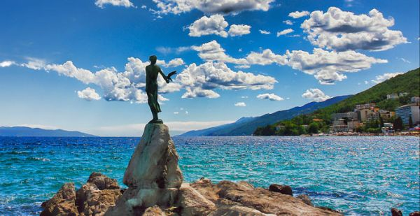

Dobrodošli na web stranicu Hotela Opatija!

Hotel se prostire na 3 kata, ima 2 dizala i ukupno 87 soba. Kategoriziran je sa čak 4 zvjezdice. U sklopu Hotela Opatija se još nalaze Velika dvorana, restoran, bar, bazen s morskom vodom te plaža za kupanje, budući da je objekt je smješten uz samo more. Također, okružen je velikim perivojem s bujnom i zanimljivom vegetacijom. Nogometni i teniski tereni oduševit će sportaše.
Opširnije
Hotel Opatija smješten je u srcu primorskog grada istog imena. Nalazi se u prekrasnom njegovanom parku nadomak gradskog kupališta i poznatog opatijskog šetališta. Opatija, često zvana Biser Jadrana, jedno je od najpopularnijih turističkih odredišta u Hrvatskoj i ima najdužu turističku tradiciju na Jadranu. Još od davne 1840. godine poznata je kao omiljeno odredište elite i poznatih umjetnika iz cijeloga svijeta koji su dolazili u Opatiju u potrazi za novom energijom koju su crpili u ovom jedinstvenom pejzažu.
Hotelski prostrani restoran „Vienna” može primiti i do 400 ljudi, a nudi pomno odabrane specijalitete domaće i internacionalne kuhinje. S jedinstvene terase hotela, jedne od najvećih i najljepših u Opatiji, posjetitelji će moći uživati u prekrasnom pogledu na more uz osvježavajuće piće i ukusne slastice. 6 dvorana za konferencije, opremljene najnovijom audio-vizualnom tehnologijom i popraćene osobnom uslugom našeg profesionalnog osoblja, jamče uspjeh događanja bilo koje vrste. Zatvoreni bazen s morskom vodom i ponuda masaža zadovoljiti će sve potrebe gostiju, kako onih koji hotel posjećuju poslovno tako i onih koji su ovdje u potrazi za odmorom.